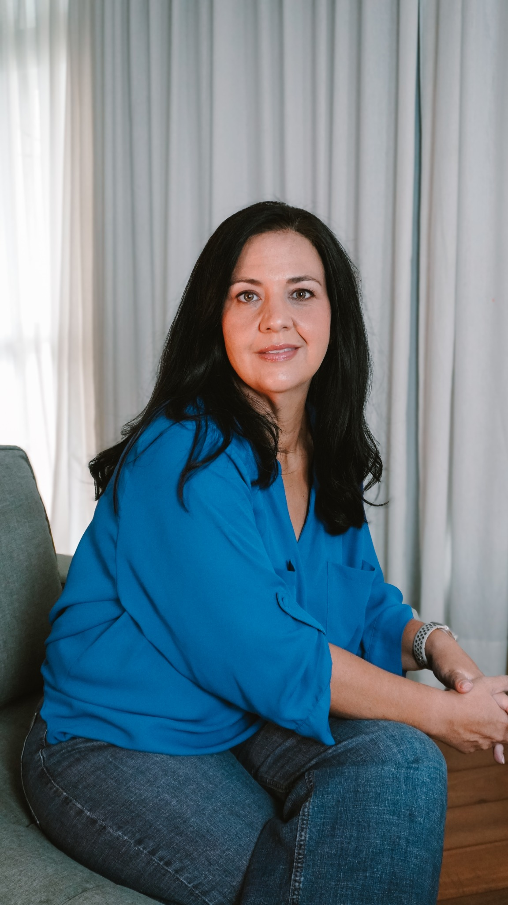
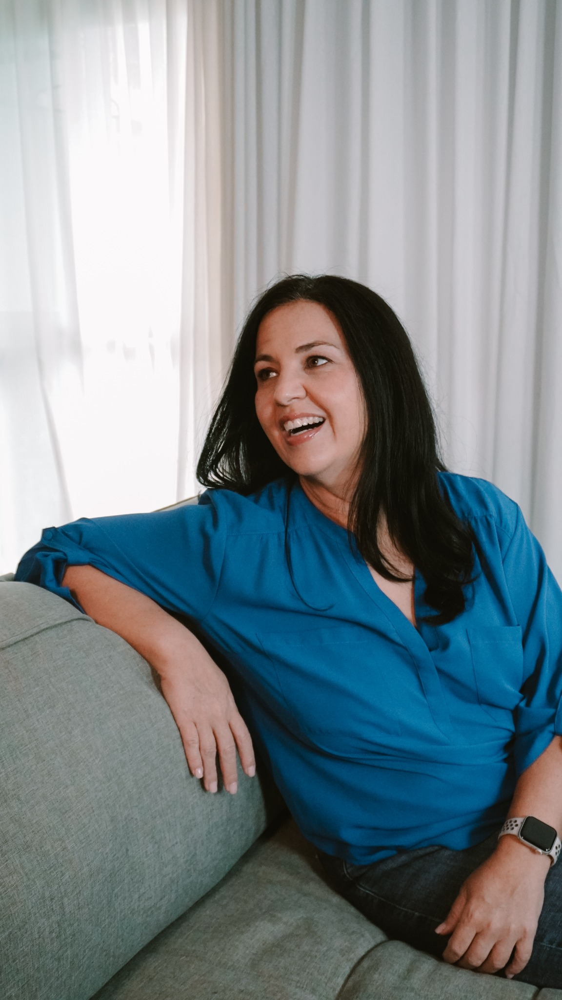
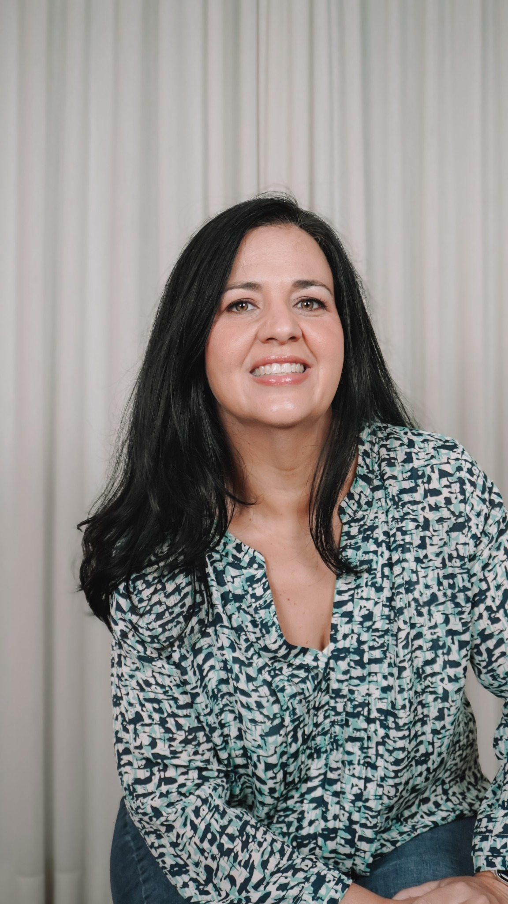
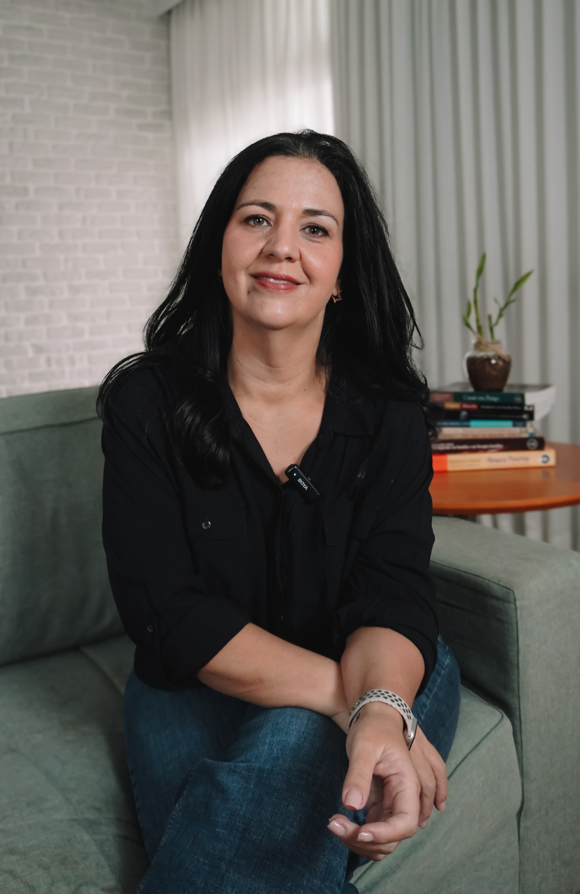

Paula do Nascimento
Psicóloga Clínica • Terapeuta Sistêmica • Professora • Pesquisadora
Cuidar das relações é compreender as histórias que elas carregam.
Há mais de 20 anos acompanho indivíduos, casais e famílias na construção de vínculos mais conscientes, integrando prática clínica, ensino e pesquisa.

Uma forma de olhar
Nenhuma pessoa existe isoladamente.
Somos atravessados pelas relações que construímos, pelas famílias das quais fazemos parte e pelas histórias que herdamos. A clínica começa quando essas histórias podem ser escutadas, compreendidas e reorganizadas com cuidado.

Sobre
Há mais de vinte anos escuto histórias.
Histórias de pessoas em sofrimento, de casais em crise, de famílias em reorganização, de psicólogos em formação e, mais recentemente, de mulheres e casais que atravessam a reprodução assistida.
Sou Mestranda no Programa de Saúde Materno Infantil da UFN, psicóloga clínica formada pela PUC-Rio (2003), Gestalt-terapeuta (2006), terapeuta sistêmica (2007), e especialista no atendimento de casais e famílias.
Foi a clínica que me levou ao ensino. E foi o ensino que me levou à pesquisa. Hoje esses três caminhos caminham juntos.
Minha forma de pensar a clínica
A psicoterapia não oferece respostas prontas.
Ela cria condições para que novas formas de compreender a si mesmo, aos outros e às relações possam emergir. Meu trabalho parte da compreensão de que sintomas, conflitos e sofrimentos não podem ser separados das histórias, dos vínculos e dos contextos em que cada pessoa vive.
Por isso, cada acompanhamento é único. A escuta clínica precisa considerar o que aparece no presente, mas também aquilo que foi herdado, silenciado, repetido ou interrompido nas relações. A mudança acontece quando novas possibilidades de consciência, escolha e responsabilidade se tornam possíveis.
Trajetória
Uma formação construída entre clínica, ensino e pesquisa.
Graduação em Psicologia
Formação pela PUC-Rio.
Gestalt-terapia
Formação clínica e aprofundamento na abordagem gestáltica.
Casal e Família
Especialização no atendimento de casais e famílias.
Supervisão Clínica
Início da atuação como supervisora de psicólogos.
Formação de terapeutas
Ampliação do ensino voltado à clínica de casal e família.
Pesquisa em Reprodução Humana
Mestrado e desenvolvimento de tecnologia de cuidado psicológico.
Atuação
Clínica, ensino e pesquisa como caminhos de cuidado.
Psicoterapia Individual
Autoconhecimento, ansiedade, luto, autoestima, transições de vida, escolhas e desenvolvimento pessoal.
Terapia de Casal e Família
Comunicação, conflitos, crises conjugais, reorganizações familiares, parentalidade, infidelidade e construção de vínculos mais conscientes.
Supervisão Clínica
Espaço de desenvolvimento para psicólogos, com discussão de casos, manejo clínico, vínculo terapêutico e ampliação do olhar sistêmico.
Ensino e Formação
Formação em casal e família, cursos gravados, aulas, grupos de estudo e experiências voltadas à prática clínica.
Reprodução Humana
Acompanhamento emocional em processos de infertilidade, FIV, decisões reprodutivas e permanência de embriões criopreservados.
Ensino
Formar terapeutas é também ampliar modos de cuidado.
Minha atuação como professora e supervisora nasce da clínica. O ensino é pensado para psicólogos e estudantes de psicologia que desejam ampliar o manejo clínico, compreender os sistemas familiares e desenvolver uma presença terapêutica mais segura.
Formação em Casal e Família
Uma formação para ampliar a escuta e o manejo clínico com relações familiares e conjugais.
Curso gravado: Introdução à Gestalt-terapia
Conteúdo introdutório para estudantes e profissionais que desejam iniciar seus estudos na abordagem.
Supervisão
Grupos e atendimentos individuais para psicólogos em desenvolvimento clínico.


Pesquisa
Pesquisa que nasce da clínica e retorna para ela.
Minha pesquisa atual investiga experiências emocionais, conjugais, familiares, morais e éticas relacionadas à reprodução assistida, especialmente diante da permanência de embriões criopreservados excedentes.
O objetivo é contribuir para a construção de tecnologias de cuidado e protocolos de acompanhamento psicológico que dialoguem com clínicas de reprodução humana, psicólogos e famílias.
Depoimentos
Palavras de quem acompanhou meu trabalho.
“Descobri agora seu canal, adorei sua forma de expor os conceitos. Obrigado!”
Hudson FilhoCanal do YouTube“Paula, gratidão por tantos ensinamentos, ficou muito claro. Muito necessário para quem está trabalhando na clínica!”
Amanda Marques Bonfim LoboCanal do YouTube“Que vídeo incrível. Sua explicação sobre as formas de contato foi a que mais me tocou até agora.”
Bruna ReinertCanal do YouTube“Nas práticas supervisionadas, após seu feedback, eu sentia um empoderamento. As supervisões fizeram toda a diferença.”
Alexssandra FreitasAluna de formação“A formação em família mudou completamente o meu olhar sobre o paciente, pois passei a enxergá-lo dentro de um sistema.”
Rosana ValenteAluna de formação“A supervisão com a Paula me abriu uma maneira diferente de atender casais, compreendendo melhor as triangulações.”
Suelen CernadasAluna de formação
Contato
Vamos conversar.
Se você procura acompanhamento psicológico, deseja ampliar sua formação profissional ou desenvolver projetos em parceria, será um prazer conversar.
- WhatsApp+55 21 99979-1330
- Instagram@pauladonascimento
- LinkedInPaula do Nascimento
- LattesCurrículo Lattes
- ORCID0009-0002-5036-0058
- YouTube@PauladoNascimento
Barra da Tijuca
Città America — Rio de Janeiro, RJ
Copacabana
Rio de Janeiro, RJ
Atendimento on-line
Para pessoas no Brasil e no exterior.